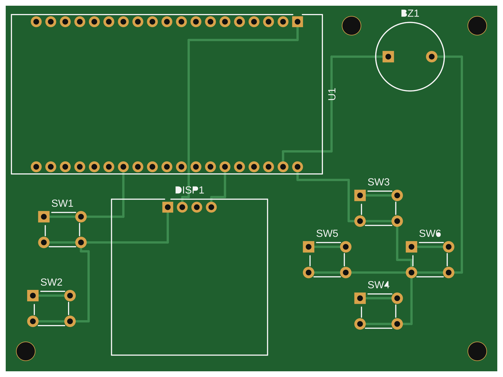
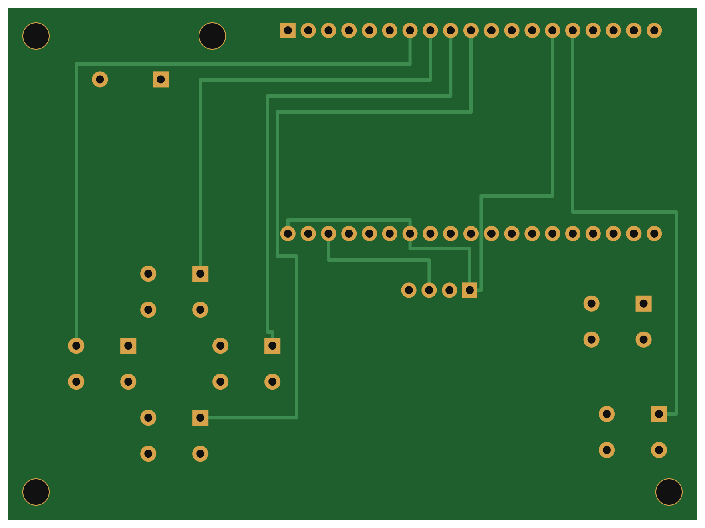
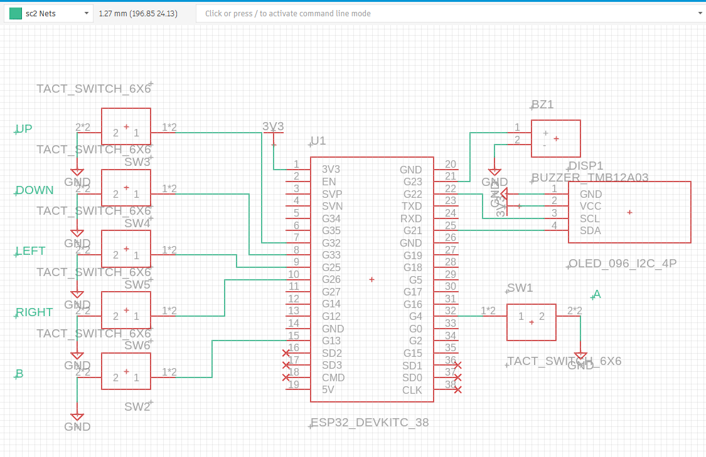
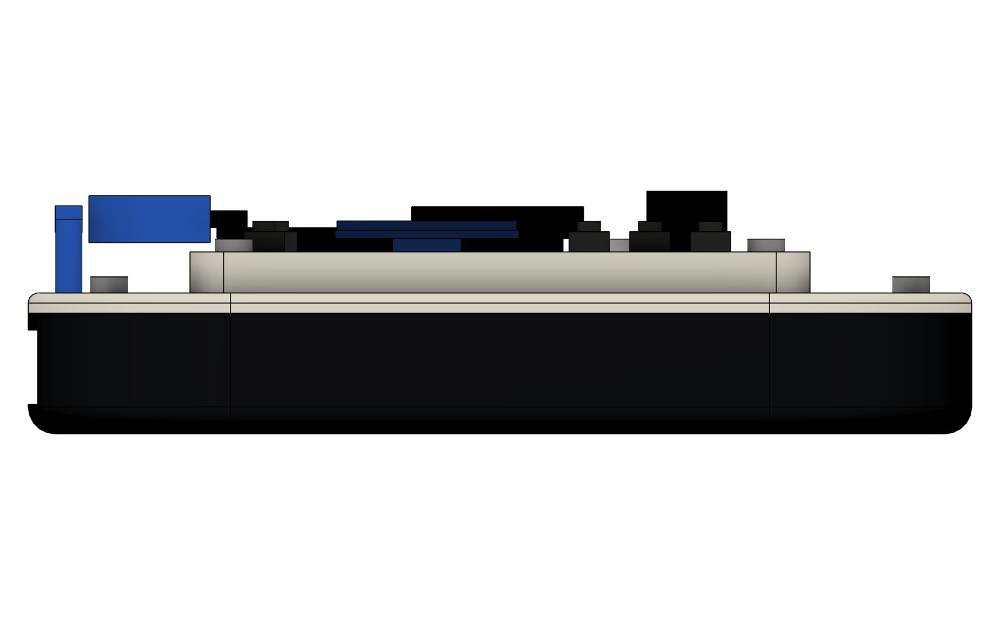
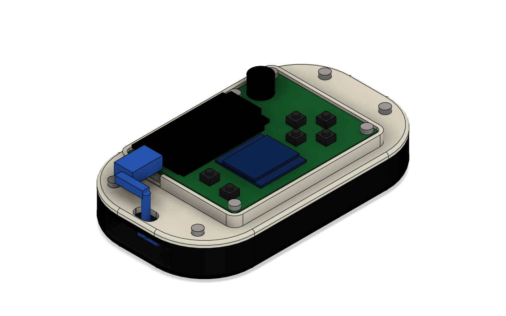
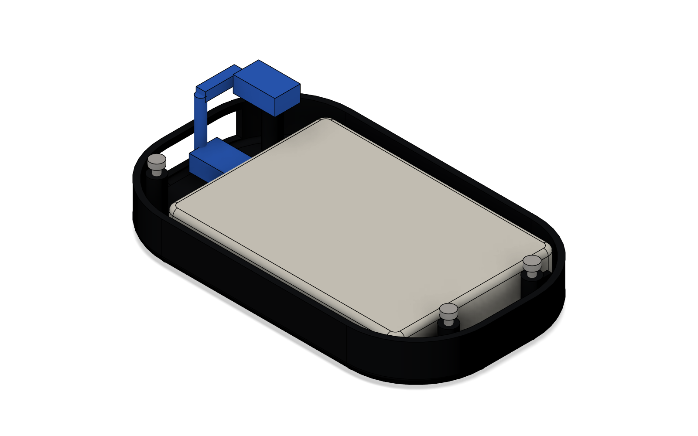
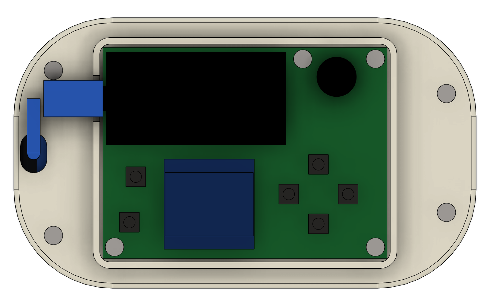
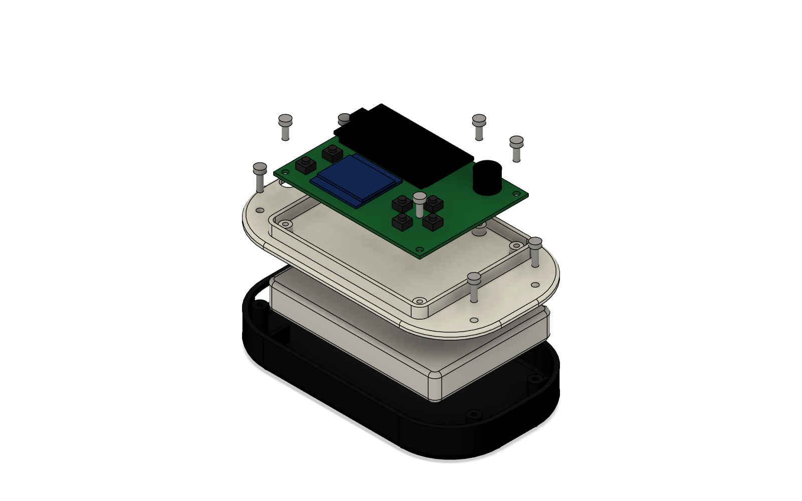

Board 12: Tiny Arcade
A game board from the owner's own parts, then its 3d model and its box. The Single Button kit (SingleButtonKitBKM: an ESP32, a 0.96 inch screen, a button and a buzzer on a breadboard) as a small circuit board with six buttons: A, B and a direction pad. Every part comes from the owner's library (library/avi_salmon), real parts from his store with their pins confirmed on the part. The kit's pins are kept, so its programs (Flappy) run unchanged. One flow: board, then the board in 3D, then a 3D-printed box, with two reviews by the owner: the placement, and the printing concept.
Ready to order the bare board
Every check below passes: Fusion's own, ours against the fab's limits, and the simulated factory.
Quality: four layers of checks
Each layer catches what the others cannot (how they work).
1. Fusion's ERC
the schematic's electrical rules. Run 2026-11-19, Fusion 2706.1.17; 5 approved, with reasons (below)
2. Fusion's board check
airwires, overlaps, Fusion's rules. Run 2026-11-19, Fusion 2706.1.17
3. Our board check
netlist, schematic = board, routing, the fab's limits. 0 approved, with reasons (below).
4. The simulated factory
the Gerbers and drill file, read as the fab does; the e-test. 5 approved, with reasons (below).
The circuit and the board
What the factory receives
Drawn from the Gerber and drill files alone, as the fab's viewer draws them: copper under the mask, mask openings (gold), silkscreen, holes.


In Fusion


The board in 3D, and its case
Each part built from the 3D model in its library record, the case around them (board3d.py, case.py). What was checked, and what is still assumed, is in the README's status table.






Production: print, assemble, everything to buy
Made by the case script from the same sources as the board (where each part is, what it looks like), so the case follows the board. Assumed, not yet measured: this is an example for learning, not made for production: the bank is the owner's 100 x 70 x 15 mm, its USB port taken at the middle of its left end; the parts' heights are their common sizes.
| Part | File | Plastic | On the bed | Why no supports |
|---|---|---|---|---|
| Body | tiny_arcade_case_body.stl | 40.74 cm3, at most 50.5 g of PLA | open side up (as drawn) | the rounded bottom edge (radius 4) rises gently from the bed; nothing hangs in the air |
| Deck | tiny_arcade_case_deck.stl | 35.51 cm3, at most 44.0 g of PLA | flat side down (as drawn) | the posts and the rim grow straight up from a flat plate |
PLA, 0.2 mm layers, 0.4 mm nozzle, 4 walls (the 2.4 mm walls print solid), 20 % infill, no supports: the 3D printing rules of thumb in docs/fusion_reference.md.
Does it fit?
Every printed part and every screw was intersected with the board, each part on it and the power bank: 503 pairs, ✓ nothing overlaps (0 mm3). A screw's thread biting into its 2.5 mm hole is meant, so it is not counted.
The thumbs
Where each button is, in mm from the case's nearest end and from its front edge. The way to know whether it is comfortable is a hand: print the true-size template on paper at 100 %, cut it out and hold it.

| Button | From the end | From the front |
|---|---|---|
| A | 36.9 | 33.8 |
| B | 35.0 | 20.0 |
| UP | 47.8 | 37.5 |
| DOWN | 47.8 | 19.5 |
| LEFT | 56.8 | 28.5 |
| RIGHT | 38.8 | 28.5 |
Assemble
- Solder the parts onto the board: the ESP32 straight on (its pin strips' plastic on the board), the screen, the buzzer (+ to the square pad), the six buttons. Clip the leads under the board to 2 mm or less.
- Screw the board onto the deck's four posts: 4 x M3 x 8 from above, through the board's holes. Turn each one until it is snug, no further: it cuts its thread in the plastic.
- Lay the power bank in the body, its ports toward the left grip, and plug the short cable's USB-A into it.
- Feed the cable's other end up through the slot in the deck's left grip, lay the deck on the body and screw it down: 4 x M3 x 10 into the columns in the grips.
- Plug the cable into the ESP32's micro-USB, at the gap in the rim. Charge the bank through the port bay in the left end.

Bill of materials: everything
| Item | Qty | Part | Where it goes | Source | Notes |
|---|---|---|---|---|---|
| PCB | 1 | Tiny Arcade board, 86 x 64 mm, 2 layers, FR-4 1.6 mm | the base of everything | a PCB fab (JLCPCB): upload factory/board_gerbers.zip | checked: see the board's checks above |
| BUZZER_TMB12A03 | 1 | Active buzzer TMB12A03, 3 V, 12 mm | BZ1 | the owner's store, library/avi_salmon/buzzer_tmb12a03 (location: kit) | soldered by hand |
| OLED_096_I2C_4P | 1 | OLED display 0.96 inch, 128 x 64, I2C (4 pins) | DISP1 | the owner's store, library/avi_salmon/oled_096_i2c (location: kit) | soldered by hand |
| TACT_SWITCH_6X6 | 6 | Tactile push button 6 x 6 mm, through-hole, 4 legs | SW1, SW2, SW3, SW4, SW5, SW6 | the owner's store, library/avi_salmon/tact_switch_6x6 (location: kit) | soldered by hand |
| ESP32_DEVKITC_38 | 1 | ESP32 DevKitC, 38 pins (clone) | U1 | the owner's store, library/avi_salmon/esp32_devkitc_38 (location: kit) | soldered by hand |
| case body | 1 | printed in PLA, 40.7 cm3 solid (at most 50.5 g) | the case | tiny_arcade_case_body.stl | flat, no supports: see Print |
| case deck | 1 | printed in PLA, 35.5 cm3 solid (at most 44.0 g) | the case | tiny_arcade_case_deck.stl | flat, no supports: see Print |
| M3x8 | 4 | M3 x 8 mm pan-head screw (ISO 7045) | board onto the deck's posts | hardware store | cuts its own thread in the 2.5 mm hole |
| M3x10 | 4 | M3 x 10 mm pan-head screw (ISO 7045) | deck into the body's grip columns | hardware store | cuts its own thread in the 2.5 mm hole |
| power bank | 1 | power bank 5000 mAh, about 100 x 70 x 15 mm | inside the body, ports to the left | the listing | size assumed until measured |
| cable | 1 | USB-A to micro-USB cable, about 10 cm | the bank's USB, up through the deck's slot, to the ESP32's USB | any | fits the left grip: modelled and checked |
The netlist, traced from intent to copper
Each net, followed through every stage. The intent is checks.json, written by hand from the agreed circuit, so a wire to the wrong pin shows up here.
| Net | Connects | As intended | Board = schematic | Routed | Bare-board e-test |
|---|---|---|---|---|---|
| GND | U1.GND@14 (pad 14), U1.GND@20 (pad 20), U1.GND@26 (pad 26), DISP1.GND (pad 1), BZ1.- (pad 2), SW1.2, SW1.4, SW2.2, SW2.4, SW3.2, SW3.4, SW4.2, SW4.4, SW5.2, SW5.4, SW6.2, SW6.4 | ✓ yes | ✓ same | ✓ joined | ✓ passes |
| 3V3 | U1.3V3 (pad 1), DISP1.VCC (pad 2) | ✓ yes | ✓ same | ✓ joined | ✓ passes |
| SCL | U1.G22 (pad 22), DISP1.SCL (pad 3) | ✓ yes | ✓ same | ✓ joined | ✓ passes |
| SDA | U1.G21 (pad 25), DISP1.SDA (pad 4) | ✓ yes | ✓ same | ✓ joined | ✓ passes |
| BUZZER | U1.G23 (pad 21), BZ1.+ (pad 1) | ✓ yes | ✓ same | ✓ joined | ✓ passes |
| BTN_A | U1.G4 (pad 32), SW1.1, SW1.3 | ✓ yes | ✓ same | ✓ joined | ✓ passes |
| BTN_B | U1.G13 (pad 15), SW2.1, SW2.3 | ✓ yes | ✓ same | ✓ joined | ✓ passes |
| BTN_UP | U1.G33 (pad 8), SW3.1, SW3.3 | ✓ yes | ✓ same | ✓ joined | ✓ passes |
| BTN_DOWN | U1.G26 (pad 10), SW4.1, SW4.3 | ✓ yes | ✓ same | ✓ joined | ✓ passes |
| BTN_LEFT | U1.G25 (pad 9), SW5.1, SW5.3 | ✓ yes | ✓ same | ✓ joined | ✓ passes |
| BTN_RIGHT | U1.G32 (pad 7), SW6.1, SW6.3 | ✓ yes | ✓ same | ✓ joined | ✓ passes |
Left free on purpose: U1.5V, U1.EN, U1.SVP, U1.SVN, U1.G34, U1.G35, U1.G27, U1.G14, U1.G12, U1.SD2, U1.SD3, U1.CMD, U1.TXD, U1.RXD, U1.G19, U1.G18, U1.G5, U1.G17, U1.G16, U1.G0, U1.G2, U1.G15, U1.SD1, U1.SD0, U1.CLK.
Parts
| Ref | Value | Footprint | Side | 3D model | MPN | LCSC |
|---|---|---|---|---|---|---|
| BZ1 | BUZZER_TMB12A03 | BUZZER_TMB12A03 | top | ✓ yes | - | - |
| DISP1 | OLED_096_I2C_4P | OLED_096_I2C_4P | top | ✓ yes | - | - |
| SW1 | TACT_SWITCH_6X6 | TACT_SWITCH_6X6 | top | ✓ yes | - | - |
| SW2 | TACT_SWITCH_6X6 | TACT_SWITCH_6X6 | top | ✓ yes | - | - |
| SW3 | TACT_SWITCH_6X6 | TACT_SWITCH_6X6 | top | ✓ yes | - | - |
| SW4 | TACT_SWITCH_6X6 | TACT_SWITCH_6X6 | top | ✓ yes | - | - |
| SW5 | TACT_SWITCH_6X6 | TACT_SWITCH_6X6 | top | ✓ yes | - | - |
| SW6 | TACT_SWITCH_6X6 | TACT_SWITCH_6X6 | top | ✓ yes | - | - |
| U1 | ESP32_DEVKITC_38 | ESP32_DEVKITC_38 | top | ✓ yes | - | - |
The same as BOM.csv and CPL.csv; the README says why each part was chosen.
Decisions: findings accepted, with the reason
An approval is a decision, not silence: the finding stays in the report, marked APPROVED. One that matches nothing any more is stale and is flagged.
| Finding | Matches | Why it is fine | Seen in |
|---|---|---|---|
| FUSION-ERC | Unconnected INPUT pin U1 | ESP32 pins this board does not use: EN has its own pull-up and RST button on the DevKitC; SVP, SVN, G34, G35 are input-only pins left free (proposed 2026-11-19, confirmed by the owner 2026-11-20) | Fusion (5) |
| NPTH-PLATED | board hole | M3 screw holes: plated is fine for a screw | factory (4) |
| LCSC | BZ1, DISP1, SW1, SW2, SW3, SW4, SW5, SW6, U1 | a kit soldered by hand from the owner's own parts: no assembly is ordered | factory |
Every check, line by line
Fusion
Recorded in fusion/fusion_checks.json by factory.py.
| approved | consistency | Unconnected INPUT pin U1 EN (approved: ESP32 pins this board does not use: EN has its own pull-up and RST button on the DevKitC; SVP, SVN, G34, G35 are input-only pins left free (proposed 2026-11-19, confirmed by the owner 2026-11-20)) |
| approved | consistency | Unconnected INPUT pin U1 SVP (approved: ESP32 pins this board does not use: EN has its own pull-up and RST button on the DevKitC; SVP, SVN, G34, G35 are input-only pins left free (proposed 2026-11-19, confirmed by the owner 2026-11-20)) |
| approved | consistency | Unconnected INPUT pin U1 SVN (approved: ESP32 pins this board does not use: EN has its own pull-up and RST button on the DevKitC; SVP, SVN, G34, G35 are input-only pins left free (proposed 2026-11-19, confirmed by the owner 2026-11-20)) |
| approved | consistency | Unconnected INPUT pin U1 G34 (approved: ESP32 pins this board does not use: EN has its own pull-up and RST button on the DevKitC; SVP, SVN, G34, G35 are input-only pins left free (proposed 2026-11-19, confirmed by the owner 2026-11-20)) |
| approved | consistency | Unconnected INPUT pin U1 G35 (approved: ESP32 pins this board does not use: EN has its own pull-up and RST button on the DevKitC; SVP, SVN, G34, G35 are input-only pins left free (proposed 2026-11-19, confirmed by the owner 2026-11-20)) |
Our board check
python scripts\pcb_check.py examples\12_tiny_arcade\fusion\board.brd: 0 errors, 0 warnings, 0 approved
OK netlist (27 lines)
| OK | PIN-UNCONNECTED | U1 pin 5V (pad 19) is connected to nothing (meant: checks.json unconnected_ok) |
| OK | PIN-UNCONNECTED | U1 pin CLK (pad 38) is connected to nothing (meant: checks.json unconnected_ok) |
| OK | PIN-UNCONNECTED | U1 pin CMD (pad 18) is connected to nothing (meant: checks.json unconnected_ok) |
| OK | PIN-UNCONNECTED | U1 pin EN (pad 2) is connected to nothing (meant: checks.json unconnected_ok) |
| OK | PIN-UNCONNECTED | U1 pin G0 (pad 33) is connected to nothing (meant: checks.json unconnected_ok) |
| OK | PIN-UNCONNECTED | U1 pin G12 (pad 13) is connected to nothing (meant: checks.json unconnected_ok) |
| OK | PIN-UNCONNECTED | U1 pin G14 (pad 12) is connected to nothing (meant: checks.json unconnected_ok) |
| OK | PIN-UNCONNECTED | U1 pin G15 (pad 35) is connected to nothing (meant: checks.json unconnected_ok) |
| OK | PIN-UNCONNECTED | U1 pin G16 (pad 31) is connected to nothing (meant: checks.json unconnected_ok) |
| OK | PIN-UNCONNECTED | U1 pin G17 (pad 30) is connected to nothing (meant: checks.json unconnected_ok) |
| OK | PIN-UNCONNECTED | U1 pin G18 (pad 28) is connected to nothing (meant: checks.json unconnected_ok) |
| OK | PIN-UNCONNECTED | U1 pin G19 (pad 27) is connected to nothing (meant: checks.json unconnected_ok) |
| OK | PIN-UNCONNECTED | U1 pin G2 (pad 34) is connected to nothing (meant: checks.json unconnected_ok) |
| OK | PIN-UNCONNECTED | U1 pin G27 (pad 11) is connected to nothing (meant: checks.json unconnected_ok) |
| OK | PIN-UNCONNECTED | U1 pin G34 (pad 5) is connected to nothing (meant: checks.json unconnected_ok) |
| OK | PIN-UNCONNECTED | U1 pin G35 (pad 6) is connected to nothing (meant: checks.json unconnected_ok) |
| OK | PIN-UNCONNECTED | U1 pin G5 (pad 29) is connected to nothing (meant: checks.json unconnected_ok) |
| OK | PIN-UNCONNECTED | U1 pin RXD (pad 24) is connected to nothing (meant: checks.json unconnected_ok) |
| OK | PIN-UNCONNECTED | U1 pin SD0 (pad 37) is connected to nothing (meant: checks.json unconnected_ok) |
| OK | PIN-UNCONNECTED | U1 pin SD1 (pad 36) is connected to nothing (meant: checks.json unconnected_ok) |
| OK | PIN-UNCONNECTED | U1 pin SD2 (pad 16) is connected to nothing (meant: checks.json unconnected_ok) |
| OK | PIN-UNCONNECTED | U1 pin SD3 (pad 17) is connected to nothing (meant: checks.json unconnected_ok) |
| OK | PIN-UNCONNECTED | U1 pin SVN (pad 4) is connected to nothing (meant: checks.json unconnected_ok) |
| OK | PIN-UNCONNECTED | U1 pin SVP (pad 3) is connected to nothing (meant: checks.json unconnected_ok) |
| OK | PIN-UNCONNECTED | U1 pin TXD (pad 23) is connected to nothing (meant: checks.json unconnected_ok) |
| OK | NET-EXPECTED | the schematic's 11 nets are exactly the intended ones |
| OK | NETLIST | 11 nets, 19 parts: no problems |
OK match (1 line)
| OK | MATCH | board and schematic agree: 9 parts, 11 nets, same pads |
INFO parts (2 lines)
| INFO | PART-MPN | no manufacturer part number (MPN) for BZ1, DISP1, SW1, SW2, SW3, SW4, SW5, SW6, U1: the BOM names them by value only |
| OK | PARTS | 9 parts: bodies apart, each with a 3D model |
OK routing (1 line)
| OK | ROUTED | all 11 signals are joined by copper, nothing stray |
OK rules (2 lines)
| OK | BOARD-SIZE | board 86.00 x 64.00 mm, 1 outline loop(s) |
| OK | RULES | every rule of the fab profile passes (JLCPCB standard 2-layer FR-4, 1 oz copper) |
OK ruleset (1 line)
| OK | RULESET | Fusion's rule set compared with the fab: 12 rules, 0 looser |
The simulated factory
python scripts\factory_check.py examples\12_tiny_arcade\factory: 0 errors, 0 warnings, 5 approved
OK files (1 line)
| OK | FILES | 9 Gerber layers and 1 drill file(s), 72 holes |
OK outline (1 line)
| OK | PROFILE | profile 86.00 x 64.00 mm at (0.00, 0.00); same as the board |
APPROVED drills (5 lines)
| APPROVED | NPTH-PLATED | board hole (3.2 mm) is in the plated drill file: the fab will plate it; fine for a screw hole, otherwise ask for it non-plated (approved: M3 screw holes: plated is fine for a screw) |
| APPROVED | NPTH-PLATED | board hole (3.2 mm) is in the plated drill file: the fab will plate it; fine for a screw hole, otherwise ask for it non-plated (approved: M3 screw holes: plated is fine for a screw) |
| APPROVED | NPTH-PLATED | board hole (3.2 mm) is in the plated drill file: the fab will plate it; fine for a screw hole, otherwise ask for it non-plated (approved: M3 screw holes: plated is fine for a screw) |
| APPROVED | NPTH-PLATED | board hole (3.2 mm) is in the plated drill file: the fab will plate it; fine for a screw hole, otherwise ask for it non-plated (approved: M3 screw holes: plated is fine for a screw) |
| OK | DRILLS | 72 holes in the drill file, each one a hole of the board |
INFO copper (2 lines)
| INFO | CLEARANCE | smallest top copper gap: 0.220 mm near (32.01, 44.25) |
| INFO | CLEARANCE | smallest bottom copper gap: 0.220 mm near (26.93, 34.62) |
OK etest (1 line)
| OK | ETEST | bare-board netlist = schematic: 11 nets, no opens, no shorts (68 pads probed) |
OK mask (1 line)
| OK | MASK | every pad has a solder-mask opening at least as large as the pad |
OK silk (1 line)
| OK | SILK | silkscreen lines wide enough and clear of the pads |
APPROVED assembly (3 lines)
| OK | BOM | BOM.csv: 4 lines, CPL.csv: 9 parts (JLCPCB columns) |
| APPROVED | LCSC | no LCSC part number for BZ1, DISP1, SW1, SW2, SW3, SW4, SW5, SW6, U1: JLCPCB cannot assemble these; solder them yourself or add an LCSC attribute (approved: a kit soldered by hand from the owner's own parts: no assembly is ordered) |
| OK | ZIP | board_gerbers.zip: 10 files to upload |
Every file
The repo holds the board; Fusion's cloud copy is only a vehicle, overwritten on every build.
Source (the board is these)
| README.md | the story: what the board does, its parts and why, status | 12.4 KB |
| board.py | step 2, in Fusion: outline, holes, placement, routing | 2.1 KB |
| board3d.py | in Fusion: the board in 3D, each part from its library model | 4.3 KB |
| case.py | in Fusion: the case around the board, its fit checks and the production files | 21.9 KB |
| checks.json | the design intent (nets written by hand) and the approved findings | 2.4 KB |
| circuit.py | step 1, in Fusion: the schematic (parts, values, wires) | 5.5 KB |
| factory.py | step 3, in Fusion: ERC and board check, save, export, Gerbers | 1.9 KB |
| route.py | step 2b, in Fusion: the tracks, after the owner agreed the placement | 3.4 KB |
Fusion's export (what the checks read)
| fusion/board.brd | board, EAGLE 9 XML | 31.7 KB |
| fusion/board.sch | schematic, EAGLE 9 XML (opens in Fusion and EAGLE) | 34.6 KB |
| fusion/fusion_checks.json | Fusion's ERC and board check findings, recorded by factory.py | 1.2 KB |
Factory files (made by Fusion's CAM job and factory_check.py)
| factory/BOM.csv | bill of materials, JLCPCB columns | 214 B |
| factory/CPL.csv | pick-and-place (component placement list), JLCPCB columns | 309 B |
| factory/board_gerbers.zip | upload this to the fab: every Gerber and the drill file | 23.5 KB |
| factory/copper_bottom.gbr | Gerber: copper, bottom | 2.5 KB |
| factory/copper_top.gbr | Gerber: copper, top | 2.9 KB |
| factory/drill_1_64.xln | drill file (Excellon): every hole, plated and not | 1.0 KB |
| factory/preview_bottom.svg | bottom side as seen from below, drawn from the Gerbers | 20.0 KB |
| factory/preview_top.svg | top side, drawn from the Gerbers | 104.4 KB |
| factory/profile.gbr | Gerber: the board's outline (where the fab cuts) | 7.1 KB |
| factory/silkscreen_bottom.gbr | Gerber: silkscreen (printing), bottom | 167 B |
| factory/silkscreen_top.gbr | Gerber: silkscreen (printing), top | 54.2 KB |
| factory/soldermask_bottom.gbr | Gerber: solder mask openings, bottom | 1.7 KB |
| factory/soldermask_top.gbr | Gerber: solder mask openings, top | 1.7 KB |
| factory/solderpaste_bottom.gbr | Gerber: solder paste stencil, bottom | 168 B |
| factory/solderpaste_top.gbr | Gerber: solder paste stencil, top | 165 B |


Production (made by case.py: print, assemble, buy)
| production/BOM.csv | bill of materials for everything: board, parts, printed parts, screws, bank, cable | 1.7 KB |
| production/production.json | the production data this page shows (assembly, fit checks, thumb distances) | 2.5 KB |
| production/template_top_1to1.svg | the top at true size: print on paper at 100 % and hold it | 2.9 KB |
| production/tiny_arcade_assembly.step | the whole assembly (case, board, parts, bank, screws) for any CAD program | 378.9 KB |
| production/tiny_arcade_case.f3d | the case's design: open in Fusion (File > Open), the whole timeline | 654.9 KB |
| production/tiny_arcade_case_body.stl | print this: one printed part, in mm, already the right way up | 297.0 KB |
| production/tiny_arcade_case_deck.stl | print this: one printed part, in mm, already the right way up | 236.8 KB |
Pictures
| media/board.png | screenshot from Fusion | 105.1 KB |
| media/board3d.png | screenshot from Fusion | 196.8 KB |
| media/case_exploded.png | screenshot from Fusion | 232.6 KB |
| media/case_v2.png | screenshot from Fusion | 269.6 KB |
| media/case_v2_front.png | screenshot from Fusion | 41.3 KB |
| media/case_v2_left.png | screenshot from Fusion | 261.1 KB |
| media/case_v2_open.png | screenshot from Fusion | 157.2 KB |
| media/case_v2_top.png | screenshot from Fusion | 230.1 KB |
| media/placement_owner.png | screenshot from Fusion | 122.7 KB |
| media/placement_proposal.png | screenshot from Fusion | 111.7 KB |
| media/schematic.png | screenshot from Fusion | 120.0 KB |


Shared by every board
| production/fab/jlcpcb_2layer.json | the fab's limits: JLCPCB standard 2-layer FR-4, 1 oz copper, read 2026-11-17 from https://jlcpcb.com/capabilities/pcb-capabilities |
| production/cam/two_layer.cam | the CAM job that makes the Gerbers and drill file |
| docs/procedures/board_checks_and_factory.md | how every check works, and what each finding means |
Status, step by step
| Step | Done |
|---|---|
| Parts: the owner's library, each part's symbol and footprint placed in Fusion and read back | 2026-11-19, Fusion 2706.1.17 |
| Schematic from the chat: 9 parts, 10 supply symbols, 11 nets; the netlist read back equal to the intent; looked at (media/schematic.png): no wire crosses another | 2026-11-19 |
| The ESP32's GND pins (the "power" kind, no wire) on the board's GND signal | 2026-11-19: pads 14, 20 and 26 read back in GND |
| Placement, first proposal: 86 x 64 mm, four M3 holes | 2026-11-19: placed and looked at (media/placement_proposal.png) |
Placement reviewed and moved by the owner in Fusion (a console layout), read back into board.py; B moved 1.5 mm off the corner screw, agreed | 2026-11-19 (media/placement_owner.png) |
Routed (route.py): two layers, no vias; the direction pins swapped so no tracks cross (UP G33, DOWN G26, RIGHT G32) | 2026-11-19: 0 unrouted, no copper off the two layers, looked at (media/board.png) |
| Fusion's checks | 2026-11-19: board check 0 errors; ERC 5 findings, unused ESP32 input pins (EN, SVP, SVN, G34, G35), approved in checks.json with that reason, confirmed by the owner 2026-11-20 |
Our board check (pcb_check.py) and the simulated factory (factory_check.py) | 2026-11-19, after a clean rebuild in a new design: 0 errors; the netlist equal to the intent; the bare-board e-test equal to the schematic (11 nets, no opens, no shorts). 2026-11-20: 0 warnings, once pcb_check.py learned that our library's parts carry their 3D model in part.json |
| Saved to the Fusion cloud (project "Tiny Arcade"), factory files | 2026-11-19 |
The board in 3D, with the parts as 3D objects (board3d.py: each part's model from its library part.json, at its place on Fusion's 3D board) | 2026-11-19: built; each part's bounding box read back over its footprint; looked at (media/board3d.png). Heights above the board's underside: ESP32 8.7 mm (soldered straight on, 2026-11-20; it was 17.2 on female headers), buzzer 11.0, screen 6.6, buttons 6.5 (the 5 mm button is assumed): to be measured |
| The ESP32 soldered straight onto the board (no sockets), the owner's choice | 2026-11-20: board3d.py and case.py model it so; the ESP32's top is 7.2 mm above the board (from its model, not measured) |
| Printing concept: a power bank underneath, a short cable outside (the owner's direction); bank 100 x 70 x 15 mm (the owner's working size; the AliExpress listing's drawing says 93 x 63.5 x 14) | 2026-11-20 |
| The case, version 1 (a closed box, button caps) | 2026-11-20: built, 0 mm3 against every part; the owner: "too boxy" |
The case, version 2 (case.py): a rounded handheld, the board open on top, the bank inside; body and deck | 2026-11-20: built in Fusion 2706.1.17; looked at from five views (media/case_v2*.png); agreed by the owner ("I like it"); the bank, the buttons, the screen and the buzzer are assumed sizes, to be measured |
Production package (production/): STLs, .f3d (re-opened: 8 components, 37 bodies), .step, true-size template, BOM for everything, assembly steps, exploded view; the 8 screws and the cable modelled | 2026-11-20: 503 pairs intersected (printed parts and screw heads against everything, the cable included; shanks against the board and its parts): 0 mm3; the template rendered and looked at |
| The thumbs: comfortable to hold and press | measured on the model only (above); not tried by hand: an example, not printed |
| Printed, fitted | not planned: an example for learning (the owner, 2026-11-20) |